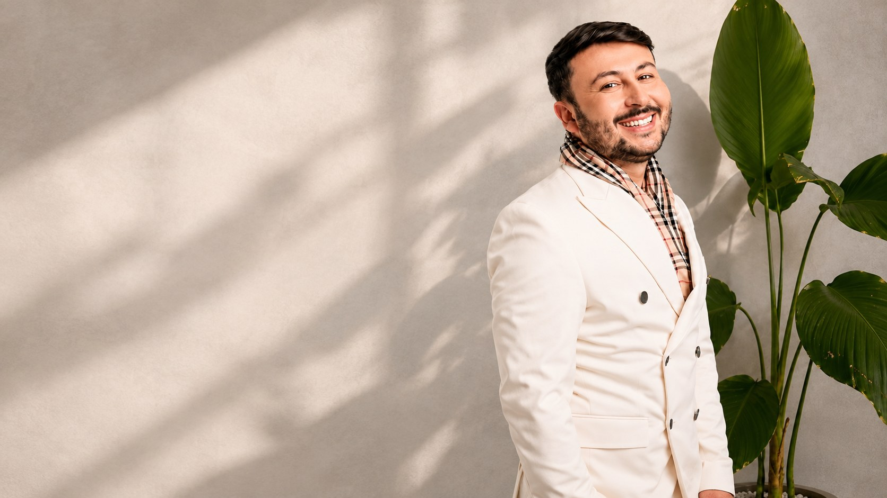
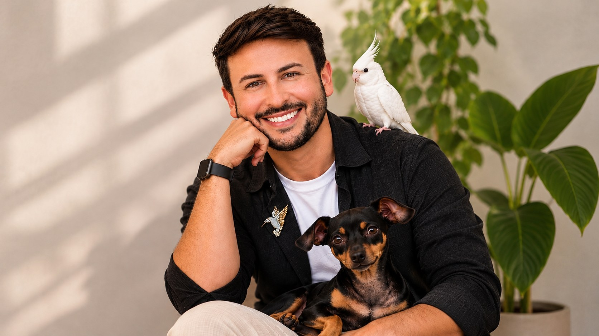
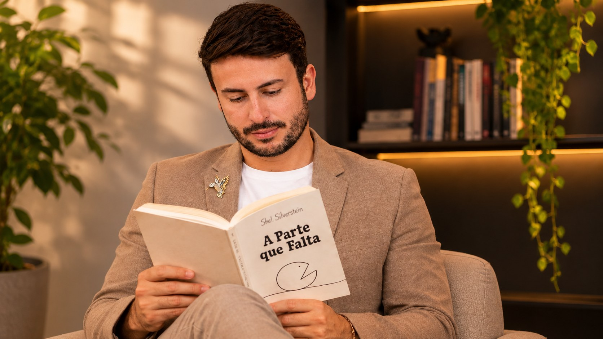

Para amar sem
se perder de si.
Terapia individual e de casal para quem quer sair de conflitos amorosos e da dependência emocional, e construir relações mais saudáveis.
Relações que acolhem,
não que aprisionam.
Um espaço seguro, sigiloso e sem julgamentos para olhar para a forma como você ama, se vincula e se coloca nas relações.
Muitas vezes a dor de um relacionamento não está só no outro. Está no medo de ser deixado, na necessidade de ser escolhido, na dificuldade de dizer não ou na sensação de nunca ser suficiente.
A terapia é o lugar para dar nome a isso. Com escuta e base na psicanálise, o trabalho é compreender a sua história para que você possa fazer escolhas afetivas mais livres e conscientes.
Sozinho ou a dois, o objetivo não é só atravessar uma crise. É construir uma relação mais saudável com o outro e, principalmente, consigo mesmo.

Talvez você já tenha dito alguma destas frases.
Se alguma soa familiar, a terapia é um bom lugar para entender o que está por trás dela.
- Eu sempre acabo em relações parecidas.
- Sinto que preciso do outro para ficar bem.
- Tenho medo de ser deixado, então aceito menos do que mereço.
- A gente não conversa mais, só discute.
- Terminou, e eu não consigo seguir em frente.
- Não sei mais quem eu sou fora desse relacionamento.
Como posso
te ajudar
Atendimento psicológico com foco em vínculos, afetos e saúde emocional.
Terapia individual
Um espaço só seu para compreender sentimentos, padrões e escolhas.
Terapia de casal
Comunicação, conexão e compreensão para casais em qualquer fase da relação.
Dependência emocional
Recuperar a autonomia afetiva e deixar de se perder no outro.
Conflitos amorosos
Términos, ciúmes, traição e ciclos de idas e vindas.
Ansiedade e autoestima
Cuidar da saúde mental e se conhecer melhor, com acompanhamento próximo.
Como funciona
a terapia
Do primeiro contato às sessões regulares, cada passo é pensado para você se sentir seguro.
- 1
Primeiro contato
Você chama no WhatsApp, tira dúvidas e escolhe horário e formato, presencial ou on-line.
- 2
Acolhimento
Na primeira sessão, a escuta da sua história e do que te trouxe até aqui.
- 3
Compreensão
Juntos, identificamos padrões afetivos e repetições que influenciam suas relações.
- 4
Sessões regulares
Encontros periódicos para elaborar o que surge e construir novas formas de se relacionar.
- 5
Autonomia
Mais clareza sobre si e escolhas mais conscientes no amor.
Presencial ou on-line,
de onde você estiver.
Sessões individuais ou de casal, com horários combinados direto com o Stênio.
Agendar pelo WhatsApp- Presencial
- Consultório em Goiânia, GO.
- On-line
- Por videochamada, para todo o Brasil.
- Formatos
- Terapia individual para adultos e terapia de casal.
- Agendamento
- Pelo WhatsApp, direto com o consultório.
- Sigilo
- Garantido pelo Código de Ética Profissional do Psicólogo.

Stênio Marques,
psicólogo e psicanalista
Psicólogo clínico com experiência nas áreas jurídica, hospitalar e clínica, especialista em Saúde Mental e Terapia de Casal. Hoje dedica sua prática a ajudar pessoas a saírem de conflitos amorosos e da dependência emocional.
Acredita que toda relação saudável começa pela forma como cada um se relaciona consigo mesmo.
- Abordagem
- Psicanálise
- Especialista em
- Terapia de Casal
- Especialista em
- Saúde Mental
- Registro
- CRP 09/13775
Não é sobre culpados.
É sobre compreender.
O que acontece entre vocês, e dentro de você.
- Escuta antes de qualquer conselho.Cada pessoa e cada casal tem uma história, e o processo respeita o seu tempo.
- Olhar para a história, não só para a crise.Padrões afetivos costumam ter raízes antigas; a psicanálise ajuda a reconhecê-los.
- Imparcialidade na terapia de casal.O foco está na dinâmica da relação, não em apontar quem está certo ou errado.
- Você também no centro.Autoestima, limites e autoconhecimento fazem parte de qualquer relação saudável.
Você tem vivido um relacionamento ou apenas tentado evitar a dor da solidão?
Reflexões sobre
amor e vínculos
Indicações de leitura e provocações publicadas no Instagram.
O primeiro passo pode ser só uma mensagem.
Atendimento presencial em Goiânia ou on-line, para todo o Brasil.

Dúvidas
frequentes
O que as pessoas costumam perguntar antes de começar.
Não. Muitas pessoas procuram a terapia justamente depois de um término, ou para entender por que se envolvem sempre em relações parecidas.
As sessões acontecem com os dois, em um espaço seguro e imparcial, para fortalecer a comunicação, compreender os conflitos e construir novos acordos.
Você pode começar pela terapia individual. Mudar a forma como você se posiciona já costuma transformar a dinâmica da relação.
Os dois. O presencial acontece em Goiânia, GO, e o on-line atende pessoas de qualquer lugar do Brasil.
Depende de cada pessoa e do que ela traz. O processo é construído em conjunto e respeita o seu tempo.
Sim. O sigilo é um dever ético do psicólogo, previsto no Código de Ética Profissional. A sessão é um espaço seguro e sem julgamentos.